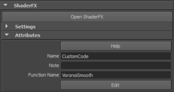

此示例演示了如何获取现有的着色器代码并在 Maya 中为 GLSL/CgFX 环境对其进行自定义，以便可以在 OpenGL 模式下将它与 ShaderFX 一起使用。然后，该示例演示了如何为 HLSL 环境自定义代码，以便也可以在 Maya 中在 DirectX 11 模式下使用。
本例中所用的着色器代码取自 https://www.shadertoy.com/view/ldB3zc，由 Iñigo Quilez 提供。您可以访问此站点，以获得以下示例代码并对其进行修改以在 Maya 中使用。
 以下工作流的视频演示现已可用。有关详细信息，请参见下面的视频教程。
以下工作流的视频演示现已可用。有关详细信息，请参见下面的视频教程。
float hash1( float n ) { return fract(sin(n)*43758.5453); }
vec2 hash2( vec2 p ) { p = vec2( dot(p,vec2(127.1,311.7)), dot(p,vec2(269.5,183.3)) ); return fract(sin(p)*43758.5453); }
vec4 voronoi( in vec2 x, float w )
{
vec2 n = floor( x );
vec2 f = fract( x );
vec4 m = vec4( 8.0, 0.0, 0.0, 0.0 );
for( int j=-2; j<=2; j++ )
for( int i=-2; i<=2; i++ )
{
vec2 g = vec2( float(i),float(j) );
vec2 o = hash2( n + g );
// animate
o = 0.5 + 0.5*sin( iGlobalTime + 6.2831*o );
// distance to cell
float d = length(g - f + o);
// do the smooth min for colors and distances
vec3 col = 0.5 + 0.5*sin( hash1(dot(n+g,vec2(7.0,113.0)))*2.5 + 3.5 + vec3(2.0,3.0,0.0));
float h = smoothstep( 0.0, 1.0, 0.5 + 0.5*(m.x-d)/w );
m.x = mix( m.x, d, h ) - h*(1.0-h)*w/(1.0+3.0*w); // distance
m.yzw = mix( m.yzw, col, h ) - h*(1.0-h)*w/(1.0+3.0*w); // cioloe
}
return m;
}
void main( void )
{
vec2 p = gl_FragCoord.xy/iResolution.yy;
float k = 2.0 + 70.0 * pow( 0.5 + 0.5*sin(0.25*6.2831*iGlobalTime), 4.0 );
k = 0.5 - 0.5*cos(0.25*6.2831*iGlobalTime);
vec4 c = voronoi( 6.0*p, k );
vec3 col = c.yzw;
col *= 1.0 - 0.8*c.x*step(p.y,0.33);
col *= mix(c.x,1.0,step(p.y,0.66));
col *= smoothstep( 0.005, 0.007, abs(p.y-0.33) );
col *= smoothstep( 0.005, 0.007, abs(p.y-0.66) );
gl_FragColor = vec4( col, 1.0 );
}
在 GLSL/CgFX 模式下工作
若要修改此代码，使其与 SFX_GLSL_*/SFX_CGFX_3 兼容，以便可以在 Maya 中在 OpenGL 模式下与 ShaderFX 一起使用，请执行以下操作：
- 将 vec2、vec3、vec4 分别更改为 float2、float3、float4。
- 将 gl_FragCoord.xy 更改为 UV。
gl_FragCoord.xy 是 GLSL 中所用的一个全局变量，用于获得纹理坐标。在 Maya 中，您使用 UV 集来获得纹理坐标。
- 移除用于定义视口分辨率的 iResolution。.在 Maya 中不需要执行此操作。
- 使用函数定义而非定义 main。
将 main (void) 更改为函数定义，使其与“自定义代码”(Custom Code)节点默认提供的函数定义类似：
CustomCode1178Output CustomCode1178Func( float2 UV )
- 添加 struct 来为节点提供输出。
struct CustomCode1178Output { float3 color; }; - 不使用 iGlobalTime，而改为使用 Maya 中的“时间”(Time)节点作为输入。
将 iGlobalTime 替换为 time。
将 float time 作为输入参数添加到函数定义中。
将 float time 作为输入参数添加到 voronoi 函数定义中。
添加 time 作为名为 voronoi 的输入参数。
- 原始代码中的 gl_FragColor 定义着色器的最终输出。将其更改为 OUT.color 并将输出按如下所示返回：
CustomCode1178Output OUT; OUT.color = col; return OUT;
- （可选）为了避免与其他节点冲突，您也可以通过以下操作自定义函数名称：
- 将此函数命名为 VoronoiSmooth，而不是通用名称 CustomCodexxxx。 注： 所有函数都应具有唯一名称。请注意，不要让两个“自定义代码”(Custom Code)节点具有相同的函数名称。
- 将 VoronoiSmooth_ 作为前缀添加到其他函数，例如 hash1 和 hash2，然后将函数 voronoi 重命名为 VoronoiSmooth。
- 在“属性编辑器”(Attribute Editor)中将“函数名称”(Function Name)更改为 VoronoiSmooth。 
- 将此函数命名为 VoronoiSmooth，而不是通用名称 CustomCodexxxx。
修改后的代码如下所示：
float VoronoiSmooth_hash1( float n ) { return fract(sin(n)*43758.5453); }
float2 VoronoiSmooth_hash2( float2 p ) { p = float2( dot(p,float2(127.1,311.7)), dot(p,float2(269.5,183.3)) ); return fract(sin(p)*43758.5453); }
float4 VoronoiSmooth( in float2 x, float w, float time )
{
float2 n = floor( x );
float2 f = fract( x );
float4 m = float4( 8.0, 0.0, 0.0, 0.0 );
for( int j=-2; j<=2; j++ )
for( int i=-2; i<=2; i++ )
{
float2 g = float2( float(i),float(j) );
float2 o = VoronoiSmooth_hash2( n + g );
// animate
o = 0.5 + 0.5*sin( time + 6.2831*o );
// distance to cell
float d = length(g - f + o);
// do the smooth min for colors and distances
float3 col = 0.5 + 0.5*sin( VoronoiSmooth_hash1(dot(n+g,float2(7.0,113.0)))*2.5 + 3.5 + float3(2.0,3.0,0.0));
float h = smoothstep( 0.0, 1.0, 0.5 + 0.5*(m.x-d)/w );
m.x = mix( m.x, d, h ) - h*(1.0-h)*w/(1.0+3.0*w); // distanec
m.yzw = mix( m.yzw, col, h ) - h*(1.0-h)*w/(1.0+3.0*w); // cioloe
}
return m;
}
struct VoronoiSmoothOutput
{
float3 color;
};
VoronoiSmoothOutput VoronoiSmoothFunc( float2 UV, float time )
{
float2 p = UV;
float k = 2.0 + 70.0 * pow( 0.5 + 0.5*sin(0.25*6.2831*time), 4.0 );
k = 0.5 - 0.5*cos(0.25*6.2831*time);
float4 c = VoronoiSmooth( 6.0*p, k, time );
float3 col = c.yzw;
col *= 1.0 - 0.8*c.x*step(p.y,0.33);
col *= mix(c.x,1.0,step(p.y,0.66));
col *= smoothstep( 0.005, 0.007, abs(p.y-0.33) );
col *= smoothstep( 0.005, 0.007, abs(p.y-0.66) );
VoronoiSmoothOutput OUT;
OUT.color = col;
return OUT;
}
现在，可以为您的自定义代码节点使用此代码。将其按如下所示进行连接，在 ShaderFX 编辑器中和 Viewport 2.0 OpenGL 模式下证明其动画。
在 DirectX 11 模式下工作
如果在 DirectX 11 模式下创建相同的 ShaderFX 网络，然后尝试执行样例渲染，则无法编译着色器样例。为帮助调试，请选择“设置 > 显示样例编译错误”(Settings > Show Swatch Compile Errors)并检查出现的错误。
若要修改此代码，使其与 SFX_HLSL_3/SFX_HLSL_5 兼容，以便可以在 Maya 中在 DirectX 11 模式下与 ShaderFX 一起使用，请执行以下操作：
- 在代码开头添加以下 if/endif 语句：
#if ( defined(SFX_HLSL_3) || defined( SFX_HLSL_5) ) #define fract frac #define mix lerp #endif
修改后的代码如下所示：
#if ( defined(SFX_HLSL_3) || defined( SFX_HLSL_5) )
#define fract frac
#define mix lerp
#endif
float VoronoiSmooth_hash1( float n ) { return fract(sin(n)*43758.5453); }
float2 VoronoiSmooth_hash2( float2 p ) { p = float2( dot(p,float2(127.1,311.7)), dot(p,float2(269.5,183.3)) ); return fract(sin(p)*43758.5453); }
float4 VoronoiSmooth( in float2 x, float w, float time )
{
float2 n = floor( x );
float2 f = fract( x );
float4 m = float4( 8.0, 0.0, 0.0, 0.0 );
for( int j=-2; j<=2; j++ )
for( int i=-2; i<=2; i++ )
{
float2 g = float2( float(i),float(j) );
float2 o = VoronoiSmooth_hash2( n + g );
// animate
o = 0.5 + 0.5*sin( time + 6.2831*o );
// distance to cell
float d = length(g - f + o);
// do the smooth min for colors and distances
float3 col = 0.5 + 0.5*sin( VoronoiSmooth_hash1(dot(n+g,float2(7.0,113.0)))*2.5 + 3.5 + float3(2.0,3.0,0.0));
float h = smoothstep( 0.0, 1.0, 0.5 + 0.5*(m.x-d)/w );
m.x = mix( m.x, d, h ) - h*(1.0-h)*w/(1.0+3.0*w); // distanec
m.yzw = mix( m.yzw, col, h ) - h*(1.0-h)*w/(1.0+3.0*w); // cioloe
}
return m;
}
struct VoronoiSmoothOutput
{
float3 color;
};
VoronoiSmoothOutput VoronoiSmoothFunc( float2 UV, float time )
{
float2 p = UV;
float k = 2.0 + 70.0 * pow( 0.5 + 0.5*sin(0.25*6.2831*time), 4.0 );
k = 0.5 - 0.5*cos(0.25*6.2831*time);
float4 c = VoronoiSmooth( 6.0*p, k, time );
float3 col = c.yzw;
col *= 1.0 - 0.8*c.x*step(p.y,0.33);
col *= mix(c.x,1.0,step(p.y,0.66));
col *= smoothstep( 0.005, 0.007, abs(p.y-0.33) );
col *= smoothstep( 0.005, 0.007, abs(p.y-0.66) );
VoronoiSmoothOutput OUT;
OUT.color = col;
return OUT;
}
使用“自定义代码”(Custom Code)节点创建一个 ShaderFX 图形
使用上述代码创建“自定义代码”(Custom Code)之后，即可创建网络，例如下面这种网络。
有关创建组并使用“默认值”(Default Value)节点的更多详细信息，请参见为组节点提供其他输入并标记组节点端口。
在此示例中，我们提供了一个默认的 UV 集和默认的时间节点，同时允许用户提供其他 UV 集。
视频教程
观看以下形象地演示上述工作流示例的视频：